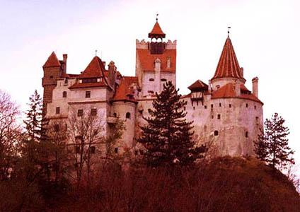
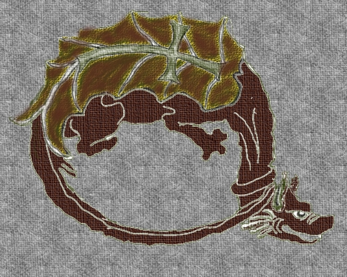

Istorie și Legendă
Vlad Țepeș
Vlad Țepeș s-a născut în orașul Sighișoara, în Transilvania, în 1431, fiind mai târziu domnitor al Valahiei.
A fost căsătorit de trei ori: întâi cu o nobilă din Transilvania - Cneajna Bathory -, apoi cu Jusztina Szilagyi și apoi cu Ilona Nelipic, verișoară a lui Matei Corvin.
A avut cinci copii, patru băieți și o fată: Radu și Vlad(din prima căsătorie), Mihail și Mihnea cel Rău (din a doua căsătorie) și Zaleska (din a treia căsătorie).
Se pare că Radu, un descendent din Vlad Țepeș, s-a stabilit în Moldova și a pus bazele ramurii moldovenești a neamului Drăculeștilor.
Cunocut pentru intoleranța și cruzimea sa, Vlad era în același timp respectat de supușii săi pentru campaniile de luptă împotriva turcilor. Era respectat atât ca luptător cât și ca voievod ce nu tolera nedreptatea, în timpul domniei lui ridicând câteva mănăstiri.
A fost un erou adulat, dar și temut de poporul lui.
Victor Hugo în "Legende de Siecles", redă felul în care Vlad Țepeș a întâmpinat armata sultanului Mahomed al-II-lea venită să cucerească Țara Românească.
Înaintând spre Târgoviște, oștenii armatei turcești au fost îngroziți de priveliștea oferită de Țepeș: case arse, câmpii pârjolite și fântâni cu apa otravită.
Totul a culminat însă cu imaginea de lângă zidurile cetății unde se adăpostise Vlad Țepeș: o imensă pădure de cadavre. Cuprinși de frică și îngroziți de mirosul celor 20.000 de cadavre ale prizonierilor turci înfipți în țepe, însuși Mahomed s-a retras recunoscând victoria voievodului.
Pentru români, Vlad Țepeș a rămas voievodul în timpul căruia puteai bea apă din fântâna Cetății Târgoviște, cu un pocal din aur masiv fără ca cineva să-l fure (surse istorice confirmă existența acestei cupe, care a fost folosită până în ziua în care Vlad Țepeș a murit).
În 1931-1932, arheologul Dinu Rosetti, la ordinul Academiei Române, a cercetat Mănăstirea Snagov pentru a descoperi trupul lui Vlad Dracula, dar nu a descoperit decât câteva morminte jefuite, în interiorul mănăstirii, legendele locale spunând că trupul lui Vlad ar fi fost înmormântat chiar la intrarea în mănăstire.
Nedând crezare acestei legende, cercetătorul a săpat și a scos la iveală un mormânt aflat în fața altarului. Mormântul era însă gol. Continuând să sape, a găsit un altar păgân, cu oase ale animalelor sacrificate.
Dând o șansă legendei, a început să cerceteze locul de la intrarea în mănăstire, unde a găsit un mormânt ce nu fusese jefuit, aparținând, se pare, unui nobil. Hainele care învăluiau cadavrul arătau că aparțineau unui om înstărit.
A fost găsit și un inel, provenit din Nuremberg. Totuși scheletul avea și cap, dar așa cum am spus mai sus, este un lucru cert că Vlad Țepeș a fost decapitat.
Mănăstirea Snagov are însă un grad ridicat de umiditate, ceea ce face ca majoritatea rămășițelor pământești ale celor înmormântați aici să se descompună foarte repede. Este deci foarte posibil ca și trupul lui Vlad Țepeș să se fi descompus înainte de a fi fost începute cercetările pentru descoperirea lui.

Vlad Dracul
Tatăl lui Vlad Țepeș a fost cavaler în "Ordinul Dragonului", ordin cavaleresc din Estul Europei care avea ca scop oprirea extinderii Imperiului Otoman.
Acest ordin poate fi comparat cu cel al Cavalerilor de Malta sau cu cel al Cavalerilor Teutoni. Era o societate militaro-religioasă, ale cărei baze fuseseră puse în 1387 de către Sigismund de Luxemburg, rege al Ungariei (mai târziu împărat al Sfântului Imperiu Roman) și de cea de a doua soție a sa, Barbara Cillei.
Blazonul "Ordinului Dragonului" reprezenta un dragon(otomanii) și o cruce(semn al creștinătății), iar Vlad Dracul a purtat acest simbol peste tot: steaguri, monede și sigiliu.
Simbolul Ordinului era un dragon, iar scopul era apărarea creștinismului și cruciada contraturcilor otomani. Datorită apartenenței sale la "Ordinul Dragonului", tatăl lui Vlad Țepeș era supranumit "Dracul". La rândul său, Vlad va fi înnobilat în numărul membrilor "Ordinului Dragonului" în 1431, la Nürnberg, de către Sigismund de Luxemburg.
Originea poreclei "Ţepeş"
Porecla "Țepeș" i s-a atribuit de pe urma execuțiilor frecvente prin tragerea în țeapă pe care le ordona. Chiar turcii îl denumeau Kazıklı Bey, (Prințul Țepeș). Acest nume a fost menționat pentru prima oară într-o cronică valahă din 1550 și s-a păstrat în istoria românilor.
Se zice că, de îndată ce a venit în scaun, în 1456, a poruncit să fie adunați hoții și cerșetorii, i-a închis într-o casă și după ce i-a ospătat, le-a dat foc. Pe boierii răzvrătiți sau neascultători îi trăgea în țeapă. Era un supliciu înfiorător: se înfigea un țăruș mare în pământ sau se tăia și subția un pom mic, iar în această țeapă osânditul era, într-un fel, răstignit, se ungea țeapa cu seu și se introducea prin partea dorsală, însă cu încetul, pentru a nu provoca moartea imediată; nu trebuia ca țeapa să străpungă ficatul sau inima, ci să iasă prin gât, lângă cap, iar omul stătea expus până-și dădea sufletul și îi mâncau corbii ochii.

Biografie
Curiozități
Domnița Katarina și celelalte femei
Există o poveste care spune că Vlad al III-lea, zis Drăculea, mai cunoscut ca Vlad Țepeș, a avut o lungă poveste de dragoste cu o săsoaică din Brașov, Katarina, fiica unui țesător. Relația lor ar fi durat 20 de ani și ar fi dus la nașterea a 5 copii, deși n-au fost căsătoriți niciodată. Asta în ciuda faptului că Vlad ar fi avut alte două neveste (sau trei, după alte legende). Și alte câteva amante. Legendele zic că a fost o dragoste aprigă ca și domnitorul, cu multe crize de gelozie și ieșiri nervoase. Se zice că într-un moment de criză de nervi, Vlad ar fi lovit un preot cu sabia, scenă exploatată în ecranizarea Dracula din 1992.
Cupa de aur
O altă legendă spune că, în timpul celei de-a doua dintre domniile sale (a fost de trei ori domnitor al Țării Românești), Vlad era atât de sigur de eficiența pedepselor crude pe care le aplica hoților, încât a pus lângă o fântână din centrul Târgoviștei (pe-atunci, capitala Țării Românești) o cupă mare din aur, cu care călătorii însetați să-și poată potoli setea. Legenda spune că, de-a lungul domniei sale, cupa de aur n-a dispărut niciodată. Ba, mai mult, nici măcar n-a prea fost folosită, întrucât oamenii nu prea aveau curaj s-o atingă.
Punga boierului
Se spune că într-o zi, Vlad Țepeș, dorind să testeze onestitatea unui boier, i-a sustrat o pungă cu 100 de bani de aur. După o zi, boierul ar fi venit la Vlad, scandalizat, că în Sfatul Țării cineva i-a furat o pungă cu 200 de bani de aur. Vlad i-ar fi dat mânios punga înapoi, după care l-a tras în țeapă pe boier, pentru minciună și lăcomie. De altfel, trasul în țeapă era metoda favorită de condamnare a celor osândiți la moarte a lui Vlad, fapt care i-a adus numele de Țepeș.
Cum a scăpat de cerșetori
Se spune că Vlad nu era chiar un om cumsecade, ba dimpotrivă. Era de părere că toți oropsiții soartei (cerșetori, bolnavi, oameni fără casă) sunt, de fapt, niște hoți care profită de mila oamenilor. Drept pentru care, într-o bună zi, a strâns cât a putut de mulți și i-a dus în cetatea Târgoviștei, într-o sală, unde i-a ospătat regește și i-a servit cu cele mai bune vinuri. Când masa s-a încheiat, Vlad ar fi încuiat sala și i-ar fi dat foc, nelăsând pe nimeni în viață.
Atacul de noapte
La 4 iunie 1462, sultanul Mehmed al II-lea el-Fatih (Cuceritorul) trecea Dunărea în fruntea unei armate numeroase, încercând să ajungă în capitala Târgoviște. Vlad, spre a-i îngreuna înaintarea, a dat foc la terenuri, a otrăvit fântânile, a trimis oamenii și animalele în munți. În plus, a deviat câteva râuri mai mici pentru a crea terenuri mlăștinoase și a pus tot felul de capcane (gropi acoperite cu crengi și frunze). Mai mult, a trimis în rândul turcilor oameni bolnavi de tuberculoză, sifilis, ciumă sau lepră, ca să infecteze cât mai mulți soldați inamici. De-a lungul înaintării anevoioase a armatei turcești, în timpul căreia otomanii nu găseau apă sau hrană, Vlad i-a atacat sporadic de mai multe ori.
La 17 iunie, Vlad, în jurul orei 12 noaptea, a intrat cu câteva mii de soldați în tabăra turcă. Folosind goarne și făclii, au creat panică între turci, le-au dat foc la corturi și au omorât, se pare, peste 15.000 de soldați. Se spune că Vlad însuși a vrut să dea foc ortului sultanului, dar l-a confundat cu cortul unui mare vizir.
Totuși Mehmed a continuat marșul spre Târgoviște. O variantă a poveștii spune că atunci când a ajuns în capitală, a găsit-o părăsită, cu porțile deschise, iar armata sa a mărșăluit vreme de-o jumătate de oră pe un drum mărginit de aproape 20.000 de turci trași în țeapă, iar în țeapa cea mai mare se afla corpul lui Hamza Pașa. O altă variantă a poveștii spune că de fapt valahii ar fi apărat cetatea, iar țepele cu turci se aflau înșiruite în afara orașului, pe o distanță de 60 de kilometri.
Cronicile sașilor
Pentru că-i purtau multă dușmănie, negustori sași au inventat o mulțime de povești îngrozitoare despre Vlad Țepeș. I-au făcut, cum s-ar spune în zilele noastre, o campanie de PR negativ extrem de eficientă. Mare parte din legendele de mai sus se pare c-au fost create de ei, de aceste povești s-ar fi folosit și regele Ungariei, Matei/Matia Corvin, când l-a arestat (plus de-o scrisoare falsă conform căreia Vlad s-ar fi închinat la turci).
Au existat în vremurile acelea o grămadă de picturi și fresce care-l puneau pe Vlad în contexte malefice și sângeroase (într-una din ele, era Pilat din Pont, judecându-l pe Iisus Hristos). Toate aceste povești (într-una din ele, era Pilat din Pont, judecându-l pe Iisus Hristos). Toate aceste povești sângeroase au circulat în vremurile acelea. Și se pare că ele au fost sursa de inspirație ntru Bram Stoker, în crearea mitului lui Dracula.
Mormântul lui Vlad Țepeș
Vlad a fost decapitat în 1476. După tăiere, capul a fost trimis, într-un vas cu miere, la curtea sultanului Mehmed, care l-ar fi înfipt într-o țeapă, ca răzbunare pentru zecile de mii de turci uciși de valah în acest fel. Corpul său, însă, nu se știe unde-a fost îngropat. O vreme, s-a crezut că a fost îngropat la Mănăstirea Snagov, dar s-a dovedit că nu era așa. Există o ipoteză care spune că ar fi îngropat la Comana, dar nu a fost verificată. Însă aici s-au găsit rămășițele unui bărbat decapitat, despre care se crede că ar aparține domnitorului valah.
Ecranizări și Presa străină
A apărut prima ecranizare a regizorul Friedrich Wilhelm Murnau a prezentat Nosferatu – Simfonia groazei, cu Max Schreck în rolul Contelui Orlok. Adaptarea a fost însă una neautorizată, astfel că numele personajelor și alte detalii au fost schimbate. Văduva lui Stoker, Florence, i-a dat în judecată pe realizatorii filmului și a avut câștig de cauză, solicitând distrugerea tuturor copiilor. Totuși, unele dintre acestea au fost salvate.
Prima adaptare cinematografică autorizată a romanului Dracula a apărut în 1931, fiind realizată de Universal Studios, în regia lui Tod Browning și cu Bela Lugosi, un actor maghiar născut la Lugo, în rolul principal.
Tot în 1931, în aceleiași platouri, a fost realizată variantă în limba spaniolă a filmului.
"Dracula" este un film britanic de groază, produs în anul 1958 în regia lui Terence Fisher. A fost distribuit în Statle Unite ca "Horror of Dracula".
Filmul este transpunerea pe ecran a romanului de ficțiune Dracula scris de Bram Stoker. Rolurile principale în film au fost jucate de Christopher Lee (prințul Dracula) și Peter Cushing (adversarul lui Dracula, Van Helsing).
Romanul lui Stoker a fost ecranizat și adaptat muzical în mai multe rânduri, dar cel mai mare succes la public l-a avut filmul regizat de Francis Ford Coppola în 1992, intitulat "Dracula", care i-a avut în distribuție pe Gary Oldman, Keanu Reeves, Winona Ryder și Anthony Hopkins.
Mai multe... Presa străină
Bram Stoker și Dracula
Cartea lui Bram Stoker, ”Dracula”, nu se bazează în mod direct pe domnia lui Vlad Drăculea, ci este o ficțiune ce se petrece în Transilvania și Anglia secolului XIX. De pe urma succesului romanului, Transilvania este asociată personajului fictiv Dracula.
Scriitorul irlandez Bram Stoker putea consulta la Royal Library din Londra câteva din acele gravuri săsești din secolul XV, ce se găseau și în colecțiile de la British Museum, în care Vlad Țepeș este descris ca un
monstru, un vampir ce bea sânge de om și un mare amator de cruzimi.
A avut probabil acces și la cartea „Istoria Moldovei și a Țării Românești” a lui Johann Christian von Engel, care îl descrie pe Vlad Țepeș ca un tiran
sângeros, ceea ce i-a dat probabil ideea să ia prințul Țării Românești ca model pentru personajul său fictiv: Dracula.
Unii autori precum Matei Cazacu sau Dumitru Peligrad au propus
ideea că Stoker ar fi avut o relație de amiciție cu un profesor maghiar de la Universitatea din Budapesta și este posibil ca acesta să îi fi dat informații despre Vlad Țepeș. Nu există o legătură reală între Vlad
Drăculea din istorie (1431-1476) și mitul literar modern al vampirului care este cartea lui Bram Stoker.
Bram Stoker nu a vizitat niciodată România. În descrierea imaginarului castel al lui Dracula el pleacă de la o prezentare a castelului
Bran disponibilă în Anglia sfârșitului de secol XIX. Într-adevăr, castelul, așa cum apare el în gravura tipărită în prima ediție a romanului „Dracula”,
seamănă izbitor de bine cu castelul Bran, și numai cu acesta. De altfel, se bănuiește că pentru a descrie plăsmuitul castel al lui Dracula, Stoker a
folosit ilustrația castelului Bran din lucrarea lui Charles Boner „Transylvania Its Product and Its People,” (London; Longmans, 1865).
Dracula – așa cum este el perceput astăzi – reprezintă un personaj fictiv.
Numele lui derivă din porecla dată lui Vlad Țepeș, domnitor al Țării
Românești (1456-1462 și în anul 1467), pe care din motive politice, istoricii vremii îl descriu ca un despot nemilos și însetat de sânge.
Personajul "Contele Dracula" apare pentru prima dată în romanul „Dracula” scris de scriitorul irlandez Bram Stoker și publicat în 1897 în Anglia.
La origine numele Dracula nu este de loc înfricoșător. El derivă din denumirea dată unui ordin al cruciaților, Ordinul Dragonului, cu care au fost asociați atât Vlad Țepeș
cât și tatăl sau Vlad Dracul (membru, de altfel, al acestui ordin). Restul mitului Dracula se datorează influenței legendelor și credințelor populare transilvănene despre stafii și vampiri.
Contele Dracula imaginat de Stoker este un vampir în vârstă de secole, un nobil transilvănean. El locuiește în ruinele unui castel situat undeva în Munții Carpați. Conversațiile purtate cu personajul Jonathan
Harker îi oferă Contelui Dracula prilejul de a se arăta deosebit de mândru de cultura sa nobilă, de interesul predilect (preferat, favorit) pentru trecutul său.
Fotografii
{kind=link}
{kind=link}
{kind=link}
{kind=link}
{kind=link}
{kind=link}
{kind=link}
{kind=link}
Puteţi trimite un email
Resurse utilizate
Readme